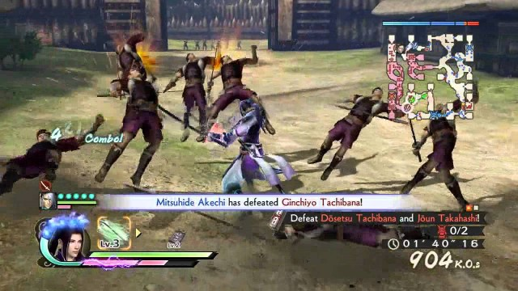
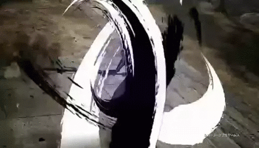

Publishing Info
- Published by: Koei Tecmo America Corp.
- Developed by: Omega Force
- Released: Oct. 21, 2014
Description
Samurai Warriors 4 is the fourth instalment in KOEI Samurai Warriors franchise. Like its predecessors, it follows historical events from Japan's Feudal era. Rather than having a storyline for each character, the story is divided by clan, each battle having its own set of available characters, with more characters unlocking as the story progresses. [...]

Game Categories
- Genre: Action
- Perspective: Behind view
- Setting: Fantasy, Historical Events, Japan (Ancient/Classical/Medieval)
- Gameplay: Hack and Slash
Quote
Samurai Warrior 4 is yet another solid entry in the long-running beat-em-up franchise. It offers a few new gameplay tweaks and a different narrative structure, but is largely the same old brawler you've seen countless times.